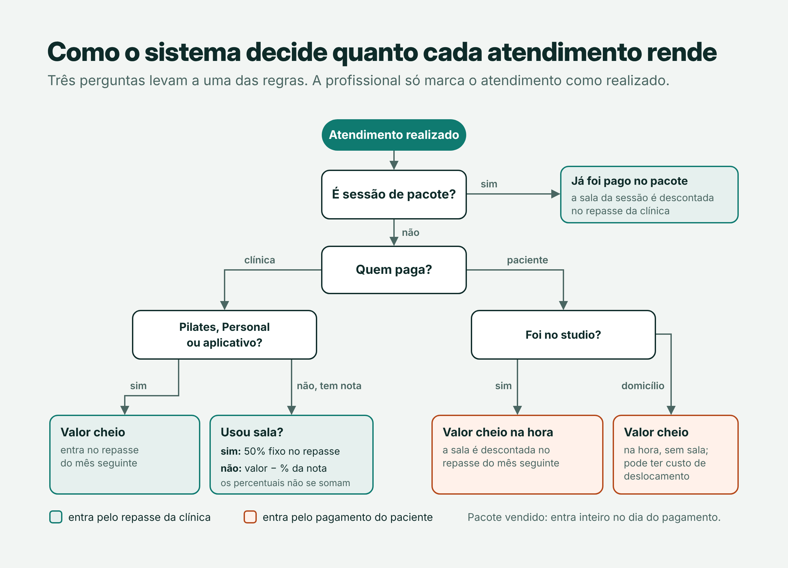
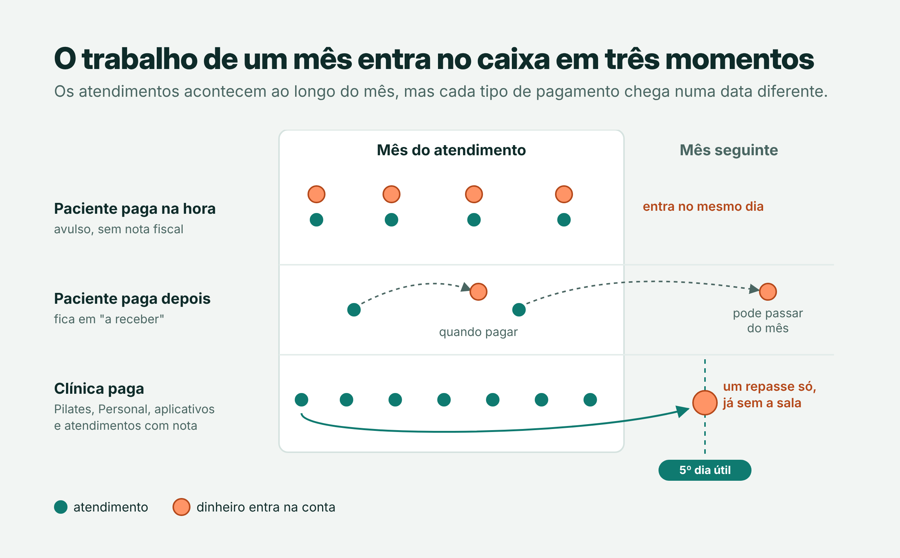
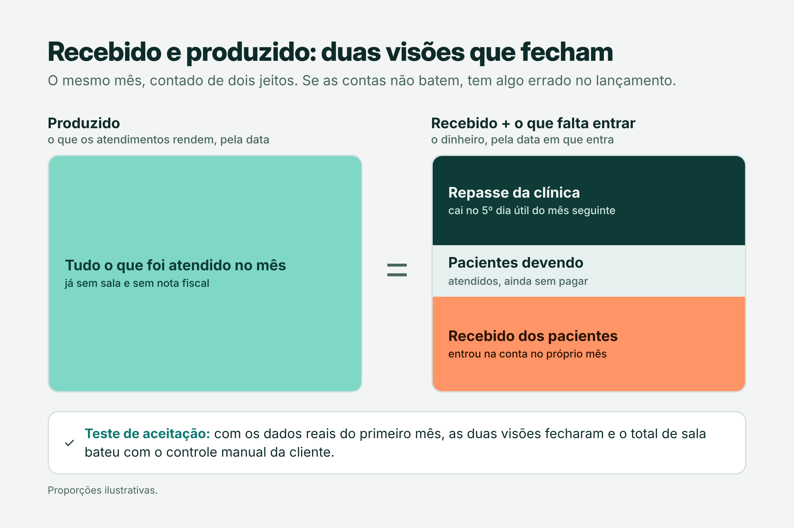

Contexto
A cliente é uma fisioterapeuta autônoma em São Paulo. Ela dá aulas de Pilates e Personal, faz liberação miofascial, drenagem e massagem, e atende em dois lugares: um studio parceiro e a casa dos pacientes.
O controle já era feito num app antigo em Google Apps Script, com os dados salvos como arquivos JSON numa pasta do Google Drive. Ele cuidava da agenda, mas não respondia às perguntas que mais importavam para ela:
- Quanto eu já recebi este mês?
- Quanto ainda vai entrar, e quando?
- O repasse que a clínica vai me pagar está certo?
- Quanto paguei de sala?
O objetivo foi responder a essas perguntas sem mudar a rotina dela: continuar lançando atendimentos pelo celular e ver os números fecharem sozinhos.
O desafio
A parte difícil não era a agenda, era o dinheiro. Levantando o processo com a cliente, mapeei sete situações de pagamento, cada uma com uma regra diferente:
| Atendimento | Quem paga | Quando entra |
|---|---|---|
| Pilates e Personal (avulso ou aplicativo) | Clínica | No repasse do mês seguinte, valor cheio |
| Com nota fiscal e sala | Clínica | No repasse, 50% fixo |
| Com nota fiscal, sem sala | Clínica | No repasse, menos o percentual da nota |
| Sem nota, no studio | Paciente | Na data do pagamento; a sala é descontada no repasse seguinte |
| Sem nota, em domicílio | Paciente | Na data do pagamento |
| Sessão de pacote | Já paga | A sala da sessão é descontada no repasse |
| Pacote vendido | Paciente | Inteiro, na data do pagamento |

O repasse da clínica é pago no 5º dia útil do mês seguinte. Ou seja: o trabalho de outubro entra no caixa em parte em outubro (pacientes), em parte em novembro (clínica), e uma parte ainda pode estar pendente (quem não pagou).

A solução foi separar duas visões do mesmo mês: o recebido, que é o extrato de caixa, e o produzido, que conta o que os atendimentos rendem pela data do atendimento.

As duas visões precisam fechar. Essa equação virou o meu teste de aceitação.
Decisões técnicas e arquitetura
Escolhi uma arquitetura enxuta, que uma pessoa só consegue manter e que roda inteira em planos gratuitos.
- Página única em HTML e JavaScript, sem framework. O app antigo já era uma página só, e reaproveitar a lógica reduziu o risco. Um script de build de poucas linhas junta os arquivos em um único
index.html. - Dados como documentos JSON no PostgreSQL. Cada mês de atendimentos, o cadastro, a configuração e a carteira são documentos numa coluna
jsonb. Mantive o formato que o app antigo usava no Drive, o que deixou a migração direta. - Acesso só por funções (RPC). As tabelas ficam num schema privado, sem acesso direto. A página chama funções que conferem a sessão e a permissão antes de agir.
- Banco na região São Paulo. Menor latência e dados de saúde dos pacientes guardados no Brasil.
- Repasse pelo próprio site. Uma Edge Function do Netlify encaminha as chamadas ao banco, para que bloqueadores e filtros de rede não derrubem o sistema. Se falhar, a página chama o banco direto.
- Prévia por pull request. Cada mudança ganha um endereço de teste, ligado ao mesmo banco mas em modo somente leitura.
Como construí
Regras de cálculo
Cada atendimento recebe uma origem (clínica, paciente ou pacote). A partir dela, três funções resolvem quase tudo: quanto o atendimento rende para a profissional, quanto entra no repasse da clínica e quanto de sala é descontado. Com essas peças, o sistema monta o extrato, a produção do mês e o repasse em formação.
O 5º dia útil é calculado descontando fins de semana e feriados nacionais, inclusive os móveis (Carnaval, Sexta-feira Santa e Corpus Christi), a partir da data da Páscoa de cada ano.
Alguns detalhes só apareceram conversando com a cliente:
- Atendimento com nota e sala não soma os percentuais: vira 50% fixo.
- Falta sem aviso prévio conta como aula dada; desmarcação com antecedência dá direito a repor.
- No pacote, a sala é descontada sessão a sessão, sobre o valor do pacote dividido pelo número de sessões.
Telas
Início, Agenda, Cadastro, Recebimentos, Metas, Relatórios, Carteira e Configurações, com menu lateral no computador e barra inferior no celular. A tela Início junta o que ela precisa ver ao abrir o sistema: os atendimentos do dia, os que ficaram sem confirmação, a meta do mês nas duas visões e o próximo repasse.
Segurança
- Senhas com bcrypt e troca obrigatória no primeiro acesso.
- Bloqueio de 15 minutos após 5 tentativas erradas.
- Sessões com expiração; trocar a senha encerra as outras sessões.
- Administrador ou usuário com permissão por módulo: sem acesso, visualizar ou editar.
- Nada é apagado de verdade: o que sai vai para uma lixeira no banco.
Migração
- Exportei os arquivos JSON do app antigo.
- Um script em Node.js gera o SQL de importação a partir deles.
- Antes de substituir qualquer documento, o SQL guarda uma cópia na lixeira.
- O arquivo gerado tem dados de pacientes, então fica fora do repositório.
A virada foi feita sem interromper os atendimentos, e o app antigo ficou como backup.
Problemas no caminho
| Problema | O que fiz |
|---|---|
| Poucos dias depois da virada, o login parou: o plano grátis do banco pausa projetos com pouco uso | Reativei o projeto e criei uma tarefa no GitHub Actions que consulta o banco todo dia e avisa por e-mail se ele não responder |
| O repasse configurado no Netlify não era aplicado e devolvia erro 404 | Troquei a regra de redirecionamento por uma Edge Function; o fallback para a chamada direta manteve o sistema no ar enquanto isso |
| Atendimentos de dias passados ficavam como "Agendado" e distorciam a meta | Criei um painel "Confirmar atendimentos" na tela inicial |
| A tela de finanças pessoais travava o navegador ao carregar os meses, um defeito herdado do app antigo | Corrigi o carregamento |
| As senhas antigas não podiam ser exportadas | Criei usuários novos com senha provisória e troca obrigatória no primeiro acesso |
Resultado
Testei as regras com os dados reais do primeiro mês. A equação fechou: o produzido foi igual ao recebido mais o que os pacientes deviam mais o repasse previsto. O total de sala calculado também bateu com o controle manual que a cliente fazia à parte.
Hoje ela vê, na tela inicial, quanto recebeu, quanto ainda vai entrar e quanto falta para a meta, e confere o repasse da clínica antes de ele cair na conta.
O que aprendi
Stack
- JavaScript
- HTML e CSS
- Node.js
- PostgreSQL
- Supabase
- pgcrypto
- Netlify
- Edge Functions
- GitHub Actions